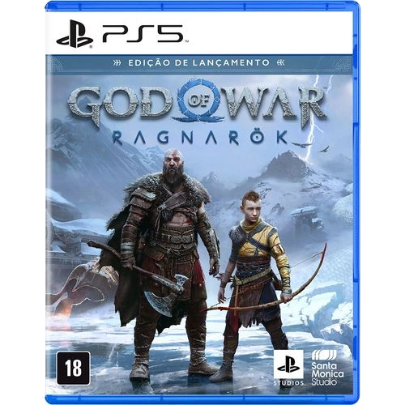

GOD OF WAR - RAGNAROK
Embarque em uma jornada épica e comovente onde Kratos e Atreus lutam entre o desejo de manterem-se unidos ou separar-se. Aqueles que desafiam o destino Atreus anseia por conhecimento para ajudá-lo a entender a profecia de “Loki” e o papel que ele desempenhará no Ragnarök. Kratos deve decidir se será acorrentado pelo medo de repetir seus erros ou se libertar de seu passado para ser o pai que Atreus precisa.